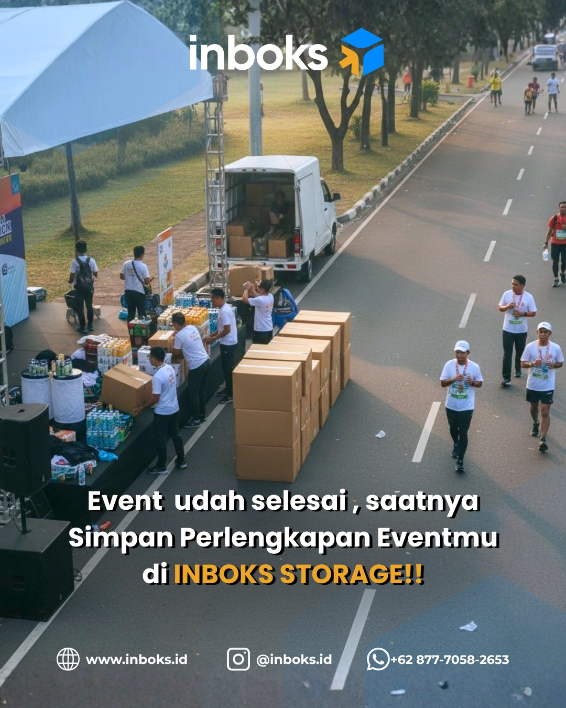
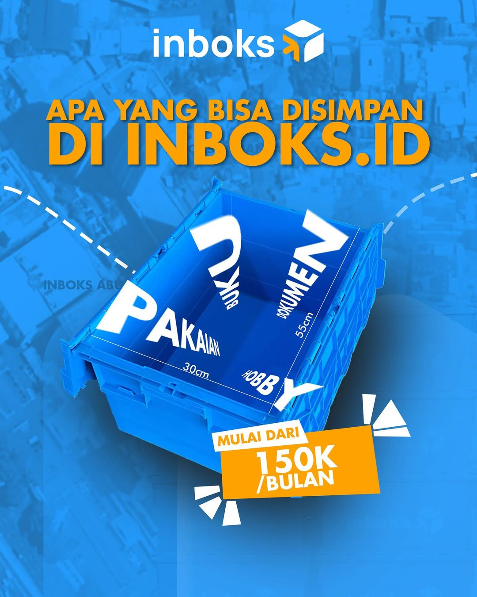
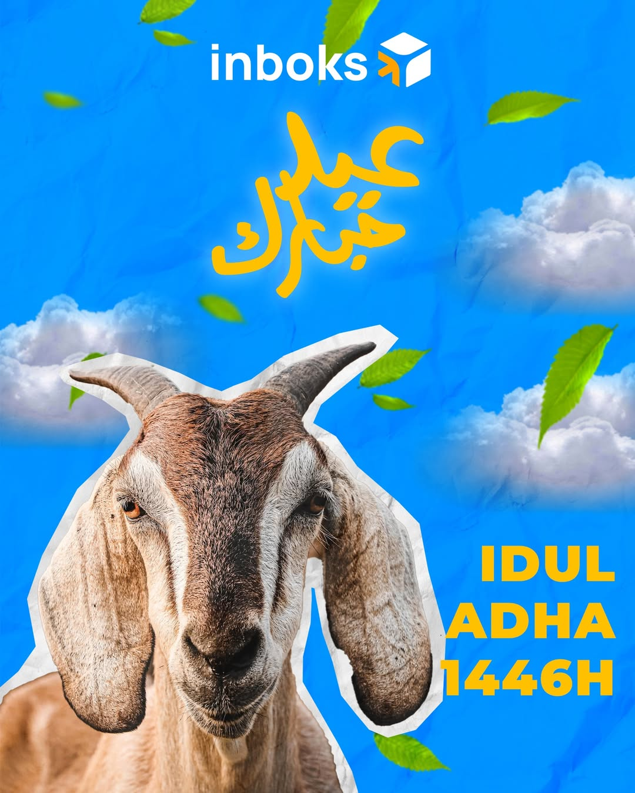
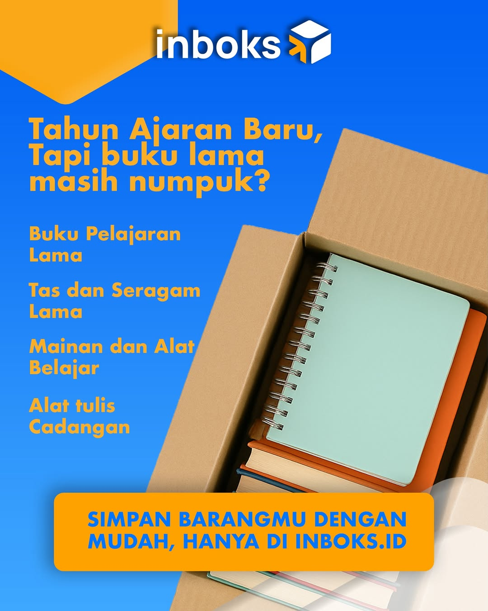

This project focused on building Inboks.id’s digital presence through a series of strategic social media campaigns designed to position the brand as a practical, modern, and accessible storage solution for everyday lifestyle needs, seasonal moments, and business logistics.
The challenge was to transform storage services—often perceived as purely functional—into visually compelling and relatable content that connected with broader audience behaviors, from event organizers and students to seasonal celebrations and personal storage needs.
I developed a flexible campaign system combining promotional education, seasonal relevance, and audience-centered storytelling. Using Inboks.id’s blue-yellow brand identity, each design balanced strong visual hierarchy, clear messaging, and contextual scenarios such as post-event logistics, school transitions, holiday moments, and practical storage education to maximize awareness, social interaction, and conversion opportunities.
Over the campaign period, the content strategy generated a measurable increase in audience interaction and direct business inquiries:
These results demonstrated the campaign’s effectiveness not only in increasing visibility, but also in translating digital engagement into real customer action and rental acquisition.
The campaign strengthened Inboks.id’s brand communication by making storage services feel more relevant, memorable, and lifestyle-oriented. Beyond awareness, the campaign successfully contributed to lead generation, customer conversations, and measurable storage rental conversions—expanding Inboks.id’s role from a storage provider into a trusted everyday solution.



